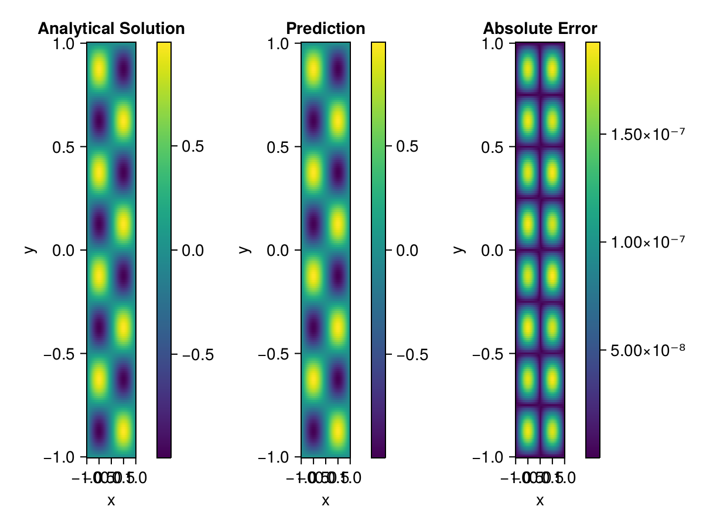

Helmholtz equation
Let us consider the Helmholtz equation in two space dimensions
\[\begin{aligned} &\Delta u(x, y)+k^{2} u(x, y)=q(x, y), \quad(x, y) \in \Omega:=(-1,1)^2 \\ &u(x, y)=0, \quad(x, y) \in \partial \Omega \end{aligned}\]
where
\[q(x, y)=-\left(a_{1} \pi\right)^{2} \sin \left(a_{1} \pi x\right) \sin \left(a_{2} \pi y\right)-\left(a_{2} \pi\right)^{2} \sin \left(a_{1} \pi x\right) \sin \left(a_{2} \pi y\right)+k^{2} \sin \left(a_{1} \pi x\right) \sin \left(a_{2} \pi y\right).\]
The exact solution is $u(x,y)=\sin{a_1\pi x}\sin{a_2\pi y}$. We chose $k=1, a_1 = 1$ and $a_2 = 4$.
using ModelingToolkit, IntervalSets, Sophon, Lux, Zygote
using Optimization, OptimizationOptimJL
@parameters x,y
@variables u(..)
Dxx = Differential(x)^2
Dyy = Differential(y)^2
a1 = 1
a2 = 4
k = 1
q(x,y) = -(a1*π)^2 * sin(a1*π*x) * sin(a2*π*y) - (a2*π)^2 * sin(a1*π*x) * sin(a2*π*y) + k^2 * sin(a1*π*x) * sin(a2*π*y)
eq = Dxx(u(x,y)) + Dyy(u(x,y)) + k^2 * u(x,y) ~ q(x,y)
domains = [x ∈ Interval(-1,1), y ∈ Interval(-1,1)]
bcs = [u(-1,y) ~ 0, u(1,y) ~ 0, u(x, -1) ~ 0, u(x, 1) ~ 0]
@named helmholtz = PDESystem(eq, bcs, domains, [x,y], [u(x,y)])\[ \begin{align} u\left( x, y \right) + \frac{\mathrm{d}}{\mathrm{d}y} \frac{\mathrm{d}}{\mathrm{d}y} u\left( x, y \right) + \frac{\mathrm{d}}{\mathrm{d}x} \frac{\mathrm{d}}{\mathrm{d}x} u\left( x, y \right) =& - 166.78 \sin\left( 12.566 y \right) \sin\left( 3.1416 x \right) \end{align} \]
Note that the boundary conditions are compatible with periocity, which allows us to apply BACON.
chain = BACON(2, 1, 5, 2; hidden_dims = 32, num_layers=5)
pinn = PINN(chain) # call `gpu` on it if you want to use gpu
sampler = QuasiRandomSampler(300, 100)
strategy = NonAdaptiveTraining()
prob = Sophon.discretize(helmholtz, pinn, sampler, strategy)
@showprogress res = Optimization.solve(prob, BFGS(); maxiters=1000)u: ComponentVector{Float64}(filters = (filter_1 = (bias = [-0.6981912377463338; -1.0919249708869139; … ; 0.9452225351782798; -0.5566654603872218;;]), filter_2 = (bias = [0.46363928691681633; 1.004273553661778; … ; -0.5517746549143631; -0.06628183189002773;;]), filter_3 = (bias = [0.4075072560126976; -1.096765811227807; … ; 0.3663705256347539; -0.1240756417806727;;]), filter_4 = (bias = [0.2844251178328953; -0.4811574998838257; … ; -0.5989087655102316; 0.3106192302190785;;]), filter_5 = (bias = [0.48613537214554015; -0.349211842559424; … ; 0.2297668915199413; 0.33905687341810914;;])), linear_layers = (layer_1 = (weight = [0.27498308868543564 -0.4100684794244184 … 0.15770363812026209 0.4033156294301456; 0.3343809428833953 -0.30091051515963974 … -0.43812027894129946 0.41597972863439514; … ; -0.17928304125736474 0.020306535384501976 … -0.21187226103769172 0.34997745624041754; 0.03585831417920763 -0.16156501374779245 … -0.14672136732344865 0.3853134787252795], bias = [-0.023618269720613306; 0.014451539777963736; … ; 0.026692615077225222; -0.041711093612905294;;]), layer_2 = (weight = [-0.12581370994009225 -0.36955075795135656 … 0.24853598187071801 0.32685447423441255; -0.15937195876057242 -0.34271420116096907 … 0.10039620867812335 -0.062007654693056136; … ; -0.1535774762875277 -0.036058961769589434 … 0.3062506946281981 0.3123827918688222; 0.2237416107016913 -0.13456606664573492 … -0.3592942466499092 0.0301380420105786], bias = [0.012781968865392167; 0.002215713361478069; … ; -0.017884620582004233; -0.01629395873815506;;]), layer_3 = (weight = [-0.3471043893670182 0.4416975410054186 … -0.2725047914560227 0.0761148028814357; -0.14947696021785664 0.016014211340615963 … -0.22418805763390365 -0.2810257014177531; … ; 0.1934479160666197 -0.34774455638886503 … -0.26089748157696735 0.371976824859992; -0.4214018147822709 0.4375131854944715 … -0.2397389195491685 -0.2406994200037819], bias = [-0.011205263091364303; 0.010602555518141907; … ; -0.013343698528492688; -0.007171793785825817;;]), layer_4 = (weight = [0.23643901434884437 0.3063813543478152 … 0.23992880726444116 -0.03340525381094143; -0.23548028224929976 -0.43784559534833706 … 0.13188683485466926 0.2921652063984978; … ; -0.05920175230319111 -0.26599549477895773 … 0.34909307840556747 0.1446076827181686; -0.019387590518363824 0.1567862877394955 … -0.00029844101814603875 0.13239036083525585], bias = [0.005014357097925377; -0.00044996655685344833; … ; 0.0027125127252659743; 0.0028195941713792102;;])), output_layer = (weight = [-0.04231900788713623 0.12105418545671057 … -0.593276161329763 -0.10311967956913383], bias = [-0.029027172145459433;;]))Let's plot the result.
phi = pinn.phi
xs, ys= [infimum(d.domain):0.01:supremum(d.domain) for d in domains]
u_analytic(x,y) = sinpi(a1*x)*sinpi(a2*y)
u_real = [u_analytic(x,y) for x in xs, y in ys]
phi_cpu = cpu(phi) # in case you are using GPU
ps_cpu = cpu(res.u)
u_pred = [sum(phi_cpu(([x,y]), ps_cpu)) for x in xs, y in ys]
using CairoMakie
axis = (xlabel="x", ylabel="y", title="Analytical Solution")
fig, ax1, hm1 = heatmap(xs, ys, u_real, axis=axis)
Colorbar(fig[:, end+1], hm1)
ax2, hm2= heatmap(fig[1, end+1], xs, ys, u_pred, axis= merge(axis, (;title = "Prediction")))
Colorbar(fig[:, end+1], hm2)
ax3, hm3 = heatmap(fig[1, end+1], xs, ys, abs.(u_pred-u_real), axis= merge(axis, (;title = "Absolute Error")))
Colorbar(fig[:, end+1], hm3)
fig